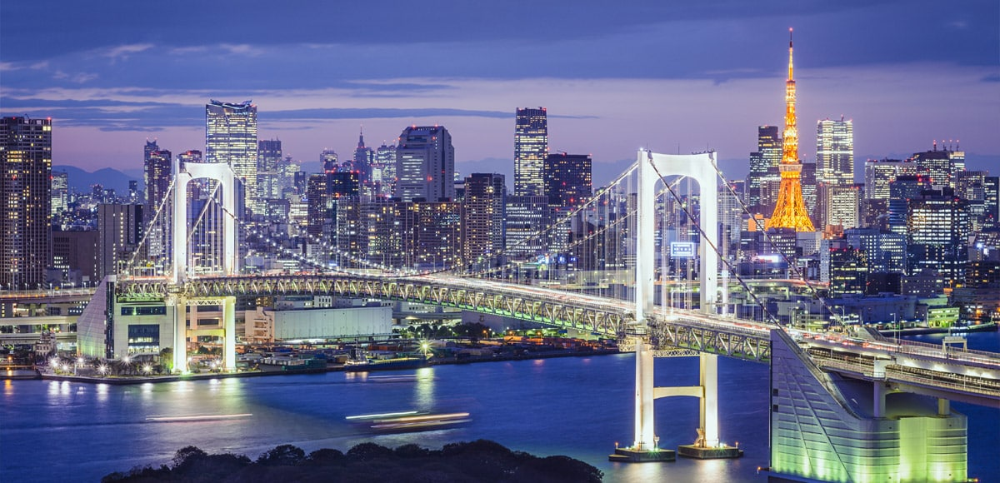

Tokyo
Tokyo, la capitale du Japon, est l’une des plus grandes villes du monde avec une population de 13 millions d'habitants, et la plus grande des 47 préfectures du Japon. C'est aujourd’hui le centre politique, économique et culturel du Japon, entre autres, ainsi que la source de diffusion de l'information. Le district administratif comprend 23 arrondissements, 26 grandes villes, 5 villes de moyenne importance et 8 villages.Située géographiquement à peu près au centre de l'archipel japonais et dans le sud de la région du Kantô, Tokyo est entourée par la préfecture de Chiba à l'est, la préfecture de Yamanashi à l'ouest au pied des montagnes, la préfecture de Kanagawa au sud le long de la rivière Tamagawa et la préfecture de Saitama au nord. La métropole, qui occupe une surface de 2 194 km2 constitue la 3ème plus petite division administrative du Japon. De l'est à l'ouest, on trouve tout autour de la ville des collines, des plateaux et des montagnes. Bien que d'une petite superficie, Tokyo offre une variété géographique très riche, allant de terres qui sont à seulement quatre mètres au-dessus du niveau de la mer, jusqu'aux régions montagneuses avec des sommets dépassant 2 000 mètres. De plus, il faut noter que certaines îles volcaniques du Pacifique comme Izu et les îles Ogasawara font également partie de Tokyo.
Kyoto
Kyoto est une grande ville de la région du Kansai au sud-ouest du lac Biwa. Ancienne capitale impériale du Japon nommée Heian-kyo, elle regorge de sanctuaires, temples historiques, jardins zen et monuments classés au patrimoine mondial de l'Unesco. On la considère souvent comme la cité japonaise traditionnelle par excellence. Ancienne capitale impériale du Japon jusqu'à la restauration Meiji de 1868, autrefois nommée Heian-kyo, Kyoto est l'une des villes les plus appréciées des voyageurs au Japon. De taille pourtant modeste face à certaines des villes proches du Kansai, avec moins d'un million et demi d'habitants sur à peine plus de 800 km², Kyoto séduit en particulier pour son environnement traditionnel, ainsi que par la présence d'innombrables temples, sanctuaires et autres jardins japonais (il y en aurait près de deux mille au total) qui ont façonné son architecture autant que son identité. D'ailleurs, la construction des immeubles ne peut pas dépasser une certaine hauteur pour laisser la vue aux bâtiments traditionnels et aux montagnes environnantes. Considérée comme la capitale culturelle du Japon, elle héberge de nombreux sites classés au patrimoine mondial de l'Unesco, pour le bonheur des touristes qui sont chaque année plus nombreux à la découvrir. Ils étaient ainsi 87,9 millions en 2019, contre environ 56,84 millions en 2015, toutes nationalités confondues, pour une dépense d'un trillion de Yens (~6,9 milliards d'euros) en hausse de 30% par rapport à l'année précédente. À l'automne 2020, Kyoto est classée meilleure grande ville du monde par le très respecté magazine Condé Nast Traveler, après 4 ans de suprémacie tokyoïte.
Kanagawa
Kanagawa est une préfecture du Japon située au centre-est de l'île Honshū. La préfecture est divisée en villes et districts. La capitale de la préfecture de Kanagawa est la ville de Yokohama, qui est subdivisée en 18 arrondissements. La préfecture de Kanagawa est bordée des préfectures de Tokyo au nord, Yamanashi à l'ouest et Shizuoka au sud-ouest. La zone côtière est appelée Shōnan et est baignée par la baie de Sagami. Elle forme au sud-est une péninsule appelée péninsule de Miura.
Osaka
Osaka est la troisième plus grande ville du Japon, après Tokyo et Yokohama, avec 2,6 millions d'habitants. Implantée autour d'une baie, elle est la capitale économique de sa préfecture située à Honshu. Osaka est réputée pour sa gastronomie, sa culture comique et son dialecte spécifique à la région du Kansai. Située à quelques encablures à peine de la très appréciée Kyoto, la capitale économique du Kansai reste pourtant en comparaison souvent délaissée des touristes occidentaux. Point névralgique et charnière de Honshu voire des déplacements dans le Japon tout entier, elle offre un réseau de transport extrêmement dense et développé (à cette extrémité ouest du célèbre tracé Tokaido) en particulier grâce à ses aéroports, sa gare Shinkansen et son métro. Toutefois, Osaka semble attirer plutôt des visiteurs de passage qui ne cherchent pas nécessairement à découvrir ses points d'intérêt, nombreux au demeurant. Peu savent par exemple qu'elle héberge le premier temple bouddhique construit au Japon sur ordre de l'empereur.Les touristes asiatiques s'y arrêtent de plus en plus, portés par les vols directs de compagnies low-cost chinoises ou sud-coréennes. Ainsi, Osaka a accueilli 10 millions de visiteurs étrangers en 2016 (un boom de 363% sur 5 ans, contre 188% de moyenne nationale). En grattant sa couche superficielle qui lui confère une réputation de "Japon occidental" voire parfois de "sale", on découvre une foule de merveilles souvent insoupçonnées à Osaka, que nous essayons modestement ici de vous faire découvrir à leur juste valeur. Jumelée avec San Francisco pendant 60 ans, Osaka a stoppé son jumelage en novembre 2017 car la ville californienne a accepté la donation d'une statue symbolisant les femmes de réconfort.
Chiba
La voisine de Tokyo est surtout connue parce qu'elle abrite l'un des deux parcs Disney du Japon, mais cette préfecture jouit également d'un cadre naturel somptueux qui s'étend de la côte jusque dans les terres. La plage de Kujukuri est la plus grande côte sablonneuse du Japon. Elle s'étend sur 66 kilomètres le long du rivage de Chiba et constitue un terrain de jeu idéal pour les amateurs de sports aquatiques. Vers l'intérieur des terres, la préfecture compte d'immenses parcs naturels et notamment l'immense mont Nokogiri coiffé en son sommet par la « vue de l'enfer ». Chiba abrite également Narita, le principal aéroport international du Japon, ce qui en fait le premier point d'entrée du pays pour la plupart des voyageurs étrangers.
Aichi
La préfecture d'Aichi est située au centre de la côte sud de l'île de Honshū, dans la région du Chūbu et plus particulièrement dans celle du Tōkai. Elle donne sur la baie d'Ise à l'ouest et la baie de Mikawa au centre, dans l'océan Pacifique. S'étendant sur 5 164,57 km2, soit 1,4 % de l'ensemble du territoire japonais, elle est la 27e préfecture la plus étendue. Sa population est de 7 404 150 habitants (février 2009), ce qui en fait la quatrième préfecture la plus peuplée du Japon derrière la métropole de Tokyo, le gouvernement d'Osaka et la préfecture de Kanagawa, pour une densité de 1 433,6 habitants/km2. La capitale préfectorale et plus grande ville est Nagoya, ville désignée par ordonnance gouvernementale subdivisée en seize arrondissements, les autres villes importantes de la préfecture étant Seto et Toyota : l'aire urbaine de Nagoya (la troisième du Japon) s'étend sur la quasi-totalité de la préfecture, voire dans les collectivités voisines, et fait partie de la mégalopole japonaise. Elle est située au cœur du Tōkaidō, axe historique et majeur de communication et de transports reliant Tokyo à Osaka-Kobe-Kyoto en longeant la côte Pacifique.
Nara
À une quarantaine de kilomètres de Kyoto, dans la région du Kansai, Nara possède un cachet atypique. Un riche patrimoine témoigne du passé glorieux de la ville en tant qu‘ancienne capitale impériale du Japon. Reconnue pour son patrimoine historique, ses temples et grands espaces vert, Nara se démarque également par la présence de nombreux cerfs qui se déplacent en totale liberté. Nara se situe à 32 km à l’est d’Osaka et à 42 km au sud de la ville de Kyoto. Ancienne capitale de l’Empire du soleil levant, mais également centre de la culture et de l’industrie nipponne, cette ville aligne un joli nombre de sites touristiques pour la plupart éparpillés autour de la gare. Parmi les fleurons de la ville de Nara, mentionnons le Parc aux cerfs qui vous permet d’observer la vie des biches et des cerfs semi apprivoisés. À l’ouest, le temple Kofukuji, dont la fondation remonte à 710, cache une jolie pagode à cinq étages. Également aménagée dans l’enceinte du sanctuaire, la Maison du trésor national expose une collection unique de statues bouddhiques. Autre lieu chargé de reliques, le Musée national de Nara propose un voyage au cœur de l’art bouddhique avec des objets issus de diverses époques. Le plus connu des édifices historiques de la cité est le temple Todaiji. Celui-ci renferme le Grand Bouddha de Nara. Le Daibutsu-den abrite également une belle statue de bronze et s’impose comme la plus grande infrastructure en bois du monde. Le Grand Sanctuaire Kasuga, édifié en 768, se hisse au panthéon des sites shintos les plus réputés du Pays du Soleil Levant. Ce domaine se distingue par ses bâtiments aux tons écarlates, créant un contraste envoûtant avec la nature alentour. L’enceinte du sanctuaire s’entoure de mille et une lanternes en pierres et en métal qui, en s’illuminant, renforcent l’ambiance mystique des lieux.
Hiroshima

Hiroshima est une ville du Japon située sur la côte nord de la mer intérieure de Seto, sur l'île de Honshū, la plus grande île japonaise. Elle est la capitale de la préfecture d'Hiroshima et la ville la plus importante de la région du Chūgoku. Depuis le 6 août 1945, la ville est mondialement connue pour avoir été l'une des deux cibles, avec Nagasaki, des bombardements atomiques par les États-Unis au cours de la Seconde Guerre mondiale. La ville de Hiroshima fut entièrement reconstruite après la guerre. À l'initiative de son maire, Shinzō Hamai, elle fut proclamée « Cité de la Paix » par le parlement japonais en 1949. En guise de témoignage, les ruines du dôme de Genbaku, l'un des rares bâtiments à ne pas avoir été entièrement détruits par l'explosion, furent conservées. La reconstruction de la ville intègre un musée de la Paix, dont les bâtiments ont été conçus par l'architecte Kenzō Tange. Un vaste parc, le parc du Mémorial de la Paix, s'étend sur 12 hectares, à proximité de l'hypocentre de l'explosion, dans lequel chaque année, le 6 août, une cérémonie commémorative est organisée. Ce parc abrite de nombreux monuments à la mémoire des victimes de la bombe. Le cénotaphe contient le nom de toutes les victimes connues de la bombe ; une flamme de la paix y brûle, destinée à rester allumée tant que des armes nucléaires existeront
Okinawa
Situé en mer de Chine orientale, Okinawa offre un tout autre visage du Japon, entre végétation luxuriante, climat subtropical et plages de sable. Cet archipel, situé à environ 1 500 km au sud-ouest de Tokyo, comprend quelque 160 îles où vivent près de 1,4 million d'habitants. 90 % d'entre eux habitent l'île principale, longue de135 km du nord au sud. Par sa situation privilégiée, ce chapelet d'îles, longtemps indépendant, a entretenu des rapports commerciaux étroits avec ses voisins de l'Asie de l'Est et du Sud-Est entre le 15e siècle et 1879, année où Okinawa devient une préfecture administrative du Japon.Le climat du lieu, subtropical océanique, rend la destination prisée en toute saison. En janvier, la température est en moyenne de 17°C, en été elle atteint environ 29 °C. Pas étonnant que l'île principale d'Okinawa comporte la plus grande forêt subtropicale du Japon. Les atouts naturels d’Okinawa ont favorisé la biodiversité et ont contribué au cadre de vie idyllique de l’archipel. Ses habitants jouissent de l'une des espérances de vie les plus longues au monde (87 ans pour les femmes). Venez rallonger la vôtre en profitant d'une alimentation saine, les pieds dans des eaux translucides en contemplant des paysages naturels exceptionnels. Impossible de s'ennuyer à Okinawa tant la palette d'activités est large. Les amateurs d'histoire peuvent se promener parmi les neuf sites archéologiques inscrits au Patrimoine mondial de l'humanité. Ces trésors culturels témoignent de la riche histoire d’Okinawa et notamment de l’époque de la dynastie Ryukyu qui régna sur ces îles du XIVe au XIXe s. : à voir, notamment, quatre vestiges de châteaux, ceux de Nakijin, Zakimi, Katsuren, Nakagusuku, ainsi que le site sacré de Sefa-utaki, un sanctuaire entre grottes et corniches.
Hyogo
Sur la côte Pacifique de la préfecture de Hyogo se trouvent Kobe, ville portuaire majeure et plaque tournante établie du commerce international, ainsi que le majestueux site du patrimoine mondial du château de Himeji. Plus à l'intérieur des terres, vous découvrirez les ruines majestueuses du château de Takeda, également connu sous le nom de « Machu Picchu du Japon ». Pour vivre l'expérience ultime des sources chaudes, jetez un coup d'œil aux onsen d'Arima ou de Kinosaki, célèbres à l'échelle nationale. Dégustez du bœuf de Kobe parfaitement persillé et de l'akashiyaki, une interprétation locale des boulettes de poulpe takoyaki sous forme d'omelette.
Après cette petite visite du pays passons maintenant à l'ensemble de leurs cultures sociales